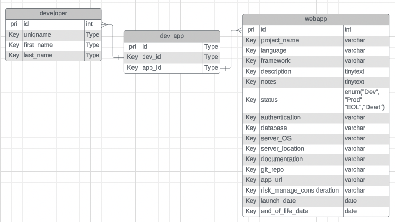

I created this in the summer of 2023, for the Web & Application Development Services department of LSA TS. While I was working on another project at the time that streamlined the documentation path for all of their web apps, I had to gather a list of all the web applications that W&ADS managed. I quickly realized that there was no central source of information. It was scattered across numerous spreadsheets and people, and it quickly proved to be a very tedious and time consuming task– when it really shouldn't be. That was the inspiration behind this project: to showcase and present the projects W&ADS had been working on all these years so they were easily accessible to anyone who was interested.
The first thing we did was plan out what our app was roughly going to look like. We started off with some low fidelity sketches of what our site would look like.
Our lo-fi sketches
We also did some database design–drew out an ER diagram and came up with our schemas
Database design work We did pair programming for a good chunk of development, which I actually liked a lot. The other parts were done asynchronously. The first thing we focused on was creating the webapp and developer tables– stuff that users were going to use the most. I built the search/filtering feature with the help of ransack so that users would be able to easily find what they needed, whether it be webapp or developer. While this worked perfectly, we still needed to make sure that W&ADS was able to add/edit/delete entries.
Thus, the second thing we focused on was authentication, authorization, and roles. To do so, I used a combination of 3 different gems: devise for authentication, CanCanCan for authorization, and rolify for roles. For authentication, I modified devise's sign up process so that only members of W&ADS are able to create an account. I was able to do this by linking it up with MCommunity (a directory of people and groups at UofM) so that only people that were in the W&ADS group were able to sign up. I also linked up the user model and the developer model so whenever a new user is created, a developer profile is created as well (a one-to-one relationship). For roles and authorization, I created an 'admin' role, and a 'developer' role. Users that had the 'admin' role had access to everything, and the ability to modify the roles of all the users. Users that had the 'developer' role in a webapp were able to only edit/delete the information about that specific webapp. To prevent non-authorized users from accessing things, I used CanCanCan.
As for styling, we stuck as closely to the W&ADS general style guidelines as much as possible. Throughout our entire development process, we continually asked for feedback from the team. We would demo our app every week or so, getting good insight on stuff we should add, and stuff we should fix.
As we wrapped up our project, we started to focus more on testing. We created a test plan that essentially walked through every part of the user experience for every role (logged out, logged in developer, logged in admin, etc) and identified any bugs or mistakes that way.